TNO
TNO
ORAN / ALGÉRIETHÉÂTRE • CRÉATION • MÉMOIRE
01TNO / ORAN
THÉÂTRENOUVEAUORAN
فرقة مسرح الجديد
Le théâtre comme acte. La scène comme espace de création, de mémoire et de transmission.
SCROLL
TNO
01
01
THÉÂTRE NOUVEAU ORANPOUR NOUVEAU THÉÂTRE
CRÉER — HABITER — TRANSMETTRE — TNO — THÉÂTRE NOUVEAU ORAN — CRÉER — HABITER — TRANSMETTRE —
02 / LA COMPAGNIE
Une scène. Une génération. Une parole.
THÉÂTRE NOUVEAU ORAN est une dynamique artistique qui place la création contemporaine, la recherche et la transmission au cœur de son projet.
À travers ses spectacles, la compagnie explore des questions humaines et sociales, en privilégiant le corps, l'image, le mouvement, la mémoire et les écritures scéniques contemporaines.
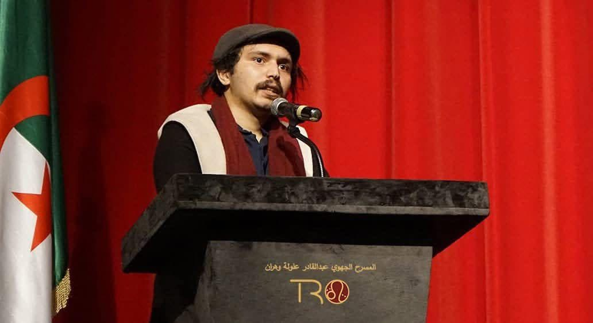
PROFESSEUR / METTEUR EN SCÈNE / PRÉSIDENTبن حمو زينوأستاذ / مخرج / رئيس فرقة المسرح الجديد
03 / PORTRAIT
Yahiya Zine Eddine Ben Hamou
Y
B
H
B
H
Yahiya Zine Eddine Ben Hamou est professeur, metteur en scène et président de la troupe Théâtre Nouveau. Son parcours artistique et culturel s'inscrit dans une génération qui renouvelle les écritures et les pratiques du théâtre algérien.
Son projet artistique s'appuie sur des approches sociologiques contemporaines et sur la discussion des questions de société dans un style qui dépasse les formes classiques et normatives.
INITIATIVES CULTURELLES & RECHERCHE
Il contribue à la préservation du patrimoine anthropologique théâtral et a participé au lancement du « Laboratoire de recherche et de formation théâtrale » à Oran, en coordination avec l'Association Sixties pour la culture et les arts, avec pour objectif de documenter et d'archiver les formes festives et cérémonielles algériennes.
04 / CRÉATIONS
Trois œuvres. Trois univers.
01
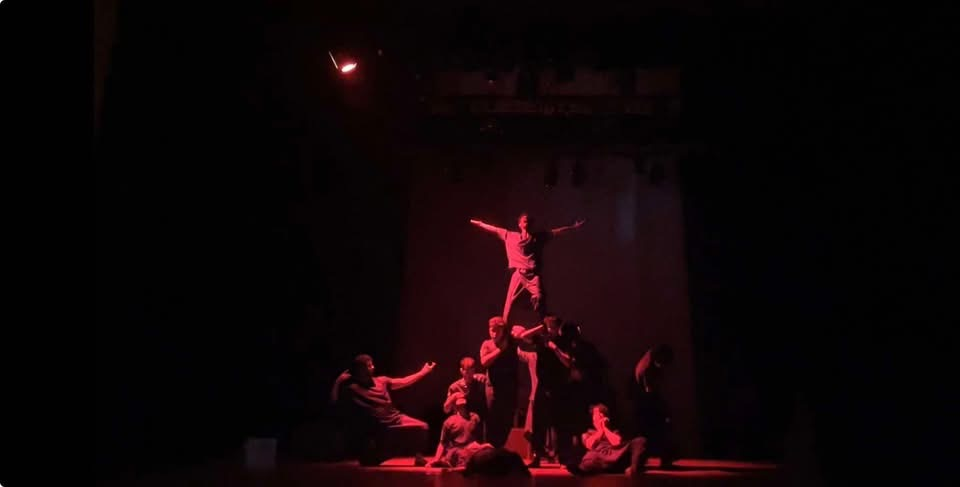
QABIL
قابيل — ملحمة الهوموسابيان
Une pièce silencieuse fondée sur le corps et l'image, mise en scène par Yahiya Zine Eddine Ben Hamou.
VOIR L'ŒUVRE ↗02
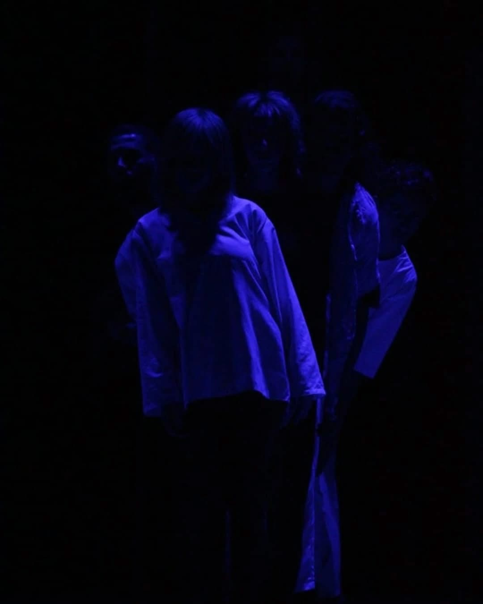
MAQABL NOUR
ما قبل النور
Une œuvre théâtrale qui revisite la mémoire du bombardement de la place Tahtaha à Oran par l'OAS, le 28 février 1962.
VOIR L'ŒUVRE ↗03

PHILOPHOBIA
فيلوفوبيا
Une pièce algérienne sur la peur de l'engagement et des relations affectives, écrite et mise en scène par Yahiya Zine Eddine Ben Hamou.
VOIR L'ŒUVRE ↗06 / PHOTO TROUPE
PHOTO TROUPE
SCÈNE · COMPAGNIE · MÉMOIRE
La troupe, en images.
Une sélection d’images de la troupe TNO, captées sur scène et dans les moments qui construisent notre parcours.
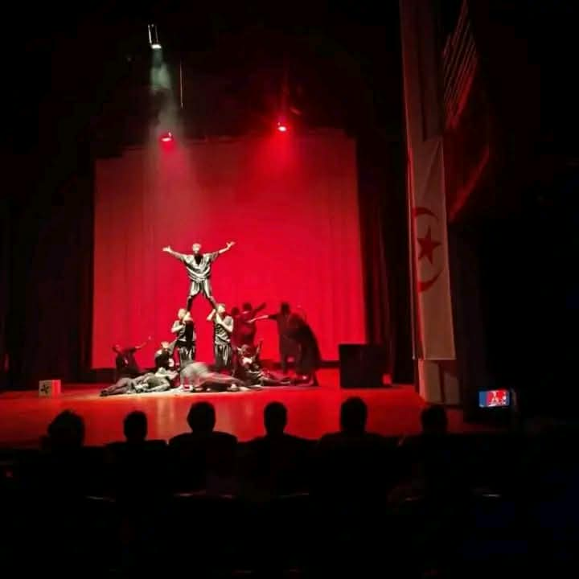
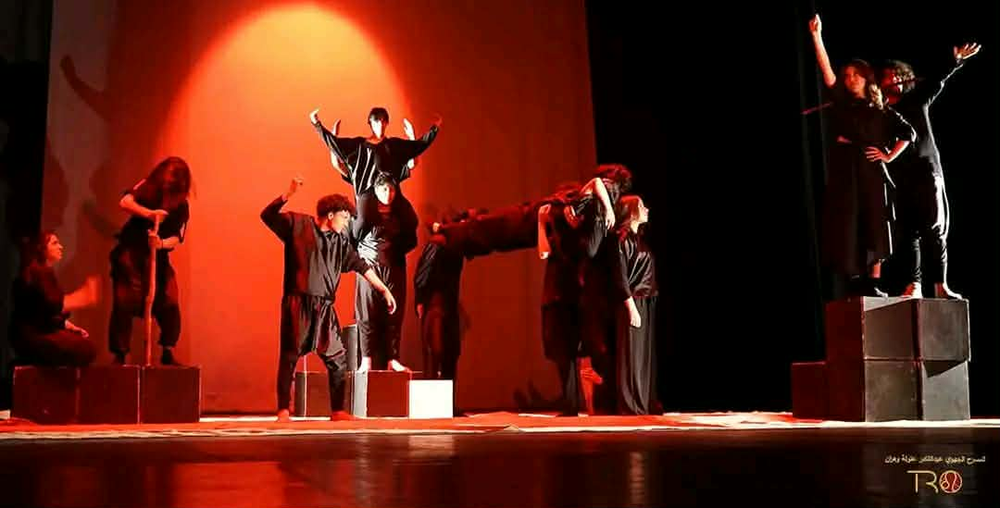
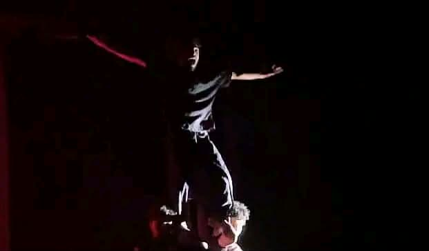
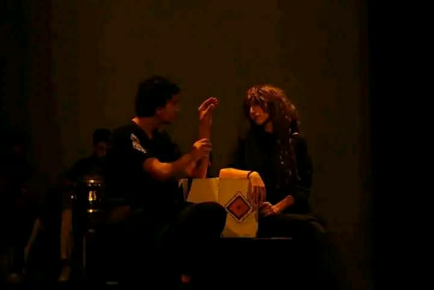
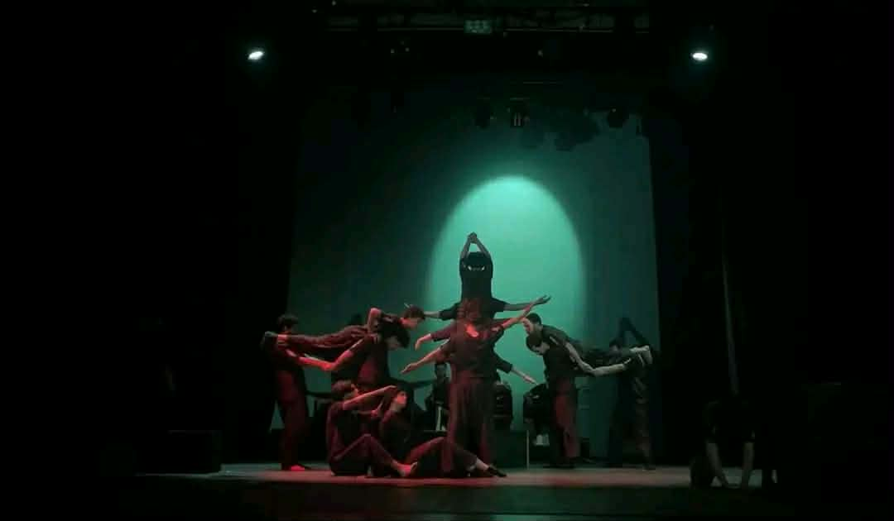
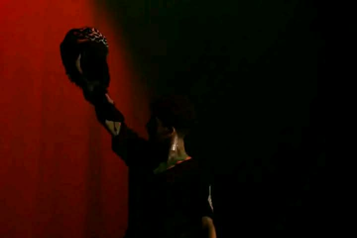
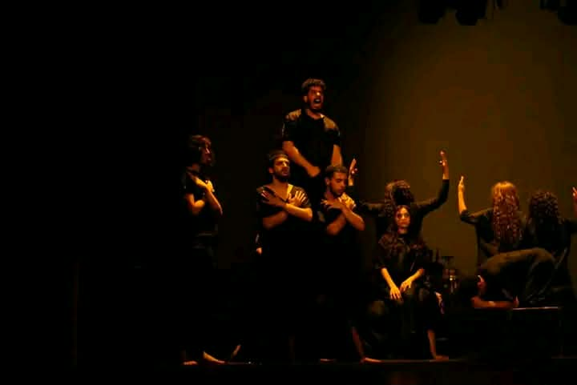
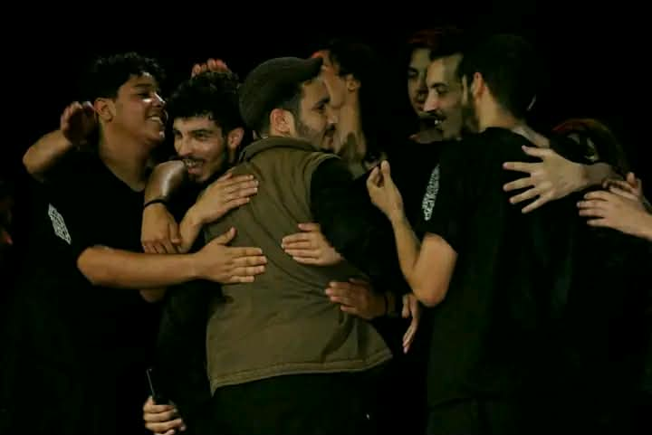
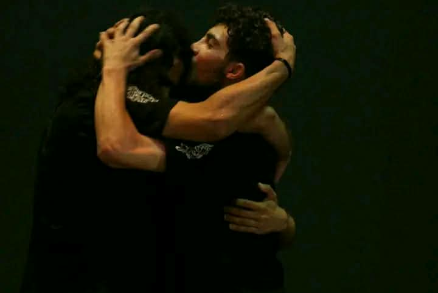
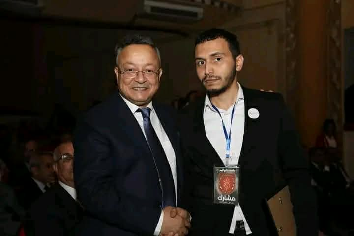
05 / TNO JUNIOR
TNO JUNIOR
JEUNESSE · SCÈNE · TRANSMISSION
Une nouvelle génération sur la scène.
Un espace dédié aux jeunes talents de TNO, à travers des images de travail, de scène et de découverte du théâtre.
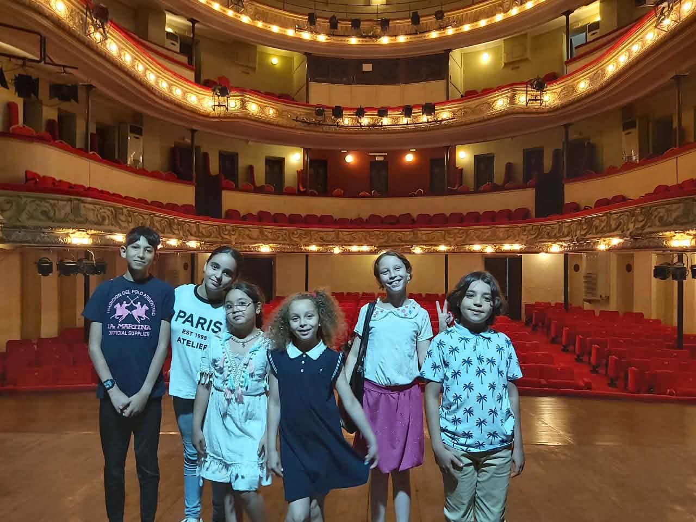
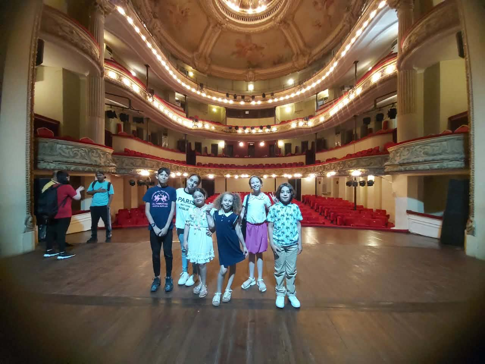
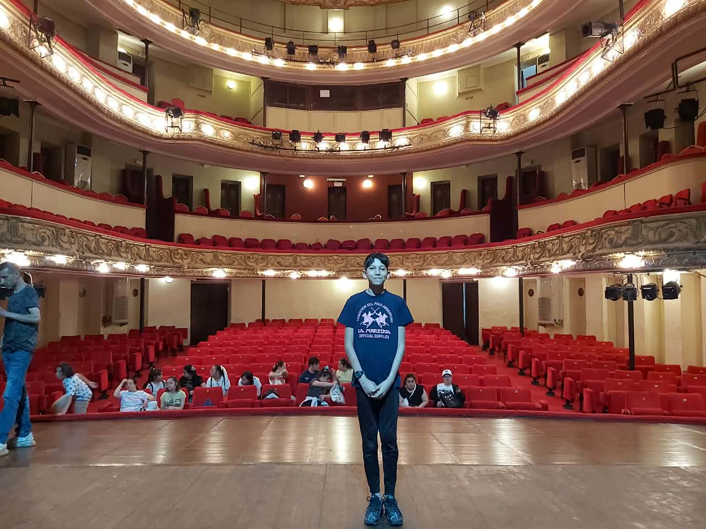
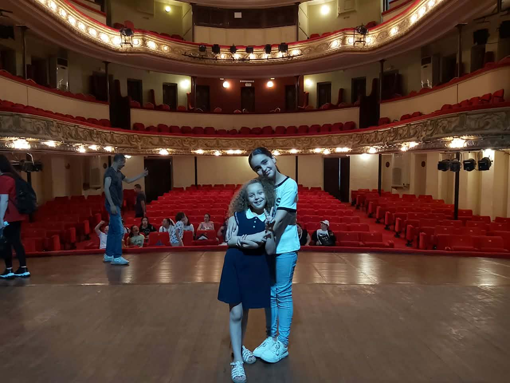
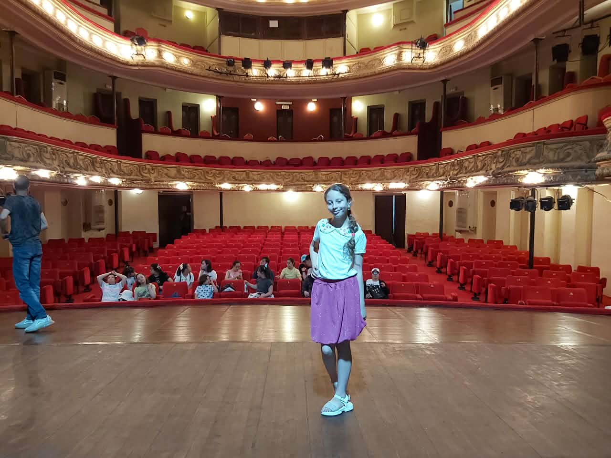
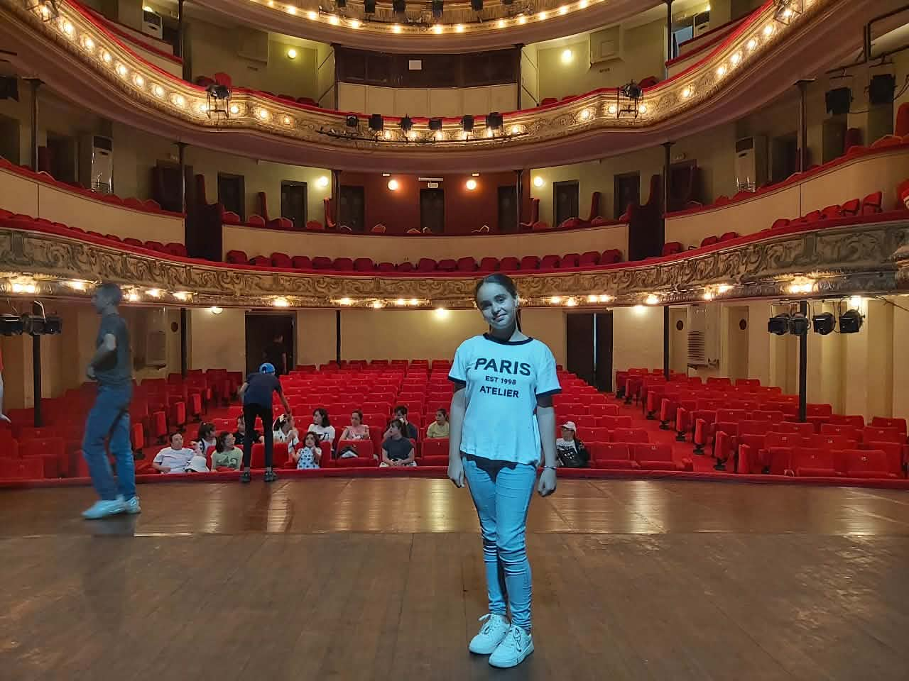
05 / LES ŒUVRES EN DÉTAIL
Mémoire, corps, société.
قابيل.. ملحمة الهوموسابيان
La pièce utilise le langage du corps, l'expression visuelle et les cris au lieu de la parole. Caïn représente le « mal absolu » qui réapparaît à travers les époques tous les 1000 ans. Le récit part de Caïn et Abel, traverse l'oppression pharaonique et la civilisation arabe, jusqu'au présent. L'œuvre porte aussi un cri artistique en soutien aux enfants de Palestine et à Gaza, et certaines représentations ont été adaptées aux personnes sourdes.
Avec la troupe du Théâtre Nouveau, rattachée à l'Institut des Arts de l'Université d'Oran 1 Ahmed Ben Bella, en coopération avec TNO. Présentée au Théâtre Régional Abdelkader Alloula d'Oran dans le cadre des Journées d'Oran du théâtre universitaire.ما قبل النور
La pièce se souvient du massacre de la place Tahtaha à Oran commis par l'Organisation de l'armée secrète française (OAS) avant l'indépendance. Deux voitures piégées ont explosé le 28 février 1962, correspondant au 23 Ramadan, alors que le marché était bondé avant l'iftar et les préparatifs de l'Aïd, faisant des dizaines de morts et de blessés selon les sources fournies. Le spectacle est présenté comme le premier spectacle algérien consacré à ce crime et s'achève par un tableau où les Scouts musulmans lèvent le drapeau national.
Écriture et mise en scène : Yahiya Ben Hamou. Production : Association « Théâtre Nouveau » et troupe culturelle Es-Senia d'Oran. Sept étudiants du département des arts dramatiques de l'Université d'Oran 1 Ahmed Ben Bella ont participé. La première représentation honorifique a été présentée au Théâtre Régional Abdelkader Alloula d'Oran.فيلوفوبيا
Production du Théâtre Nouveau Oran et mise en scène par Yahiya Zine Eddine Ben Hamou, cette pièce traite de la peur de l'engagement et des relations affectives. Durée : 60 minutes en continu. Elle suit un jeune homme marqué par des déceptions passées qui rencontre une jeune femme souffrant de philophobie, ou peur de l'amour. Tous deux craignent l'amour tout en le désirant ; le conflit se traduit par des scènes expressives et une chorégraphie de mouvement. L'œuvre aborde également les raisons psychologiques de la peur de nouvelles relations, l'influence négative des réseaux sociaux sur la vision de l'amour et les effets du divorce et des séparations familiales sur les nouvelles générations.
06 / ARCHIVE
Participations. Mémoire. Écritures.
01
JUILLET 2026 · ALGER
Participation à la première édition du Festival algérien africain du théâtre universitaire
Le Théâtre Nouveau Oran (TNO) a participé à la première édition du Festival algérien africain du théâtre universitaire. La manifestation s’est tenue à Alger sous le slogan « L’Afrique se rencontre sur la scène du théâtre universitaire », avec des institutions universitaires de 16 pays africains.
02
TOURNÉE · 2025
DAR EL KBIRA — De Hattin à Mazagran
Une tournée autour de « Caïn — L’épopée de l’Homo sapiens », organisée à l’occasion du 1er Novembre, avec des étapes documentées à Tlemcen, Maghnia, Sidi Bel Abbès et Oran. Les publications de la troupe rendent compte des rencontres, de l’accueil et du retour en images de cette tournée.
VOIR LA VIDÉO OFFICIELLE ↗03 / ÉCRITURES
Les livres de Yahi Ben Hamou
Deux ouvrages présents dans l’archive littéraire de TNO.
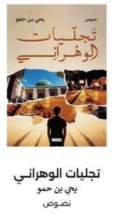
نصوص
تجليات الوهراني
يحي بن حمو
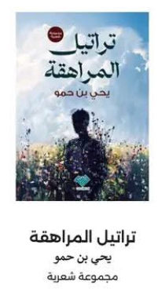
مجموعة شعرية
تراتيل المراهقة
يحي بن حمو
07 / PALMARÈS & FESTIVALS
Prix. Festivals. Parcours.
Une mémoire des distinctions, participations et rendez-vous qui jalonnent le parcours du Théâtre Nouveau Oran.
سيد الهو
Festival international du théâtre Omar Khalfa — Tunisie.
فيلوفوبيا
Yahiya Ben Hamou — 14e Festival national du théâtre universitaire de Sidi Bel Abbès, 2024.
قابيل — ملحمة الهوموسابيان
Distinctions attribuées lors de la 57e édition du Festival du théâtre amateur, selon l’archive de la troupe.
ما قبل النور
Mسرح الثورة للهواة — selon l’archive de la troupe.
2023المهرجان الوطني لمسرح الهواة — مستغانم · الطبعة 54ما قبل النور
2024المهرجان الوطني للمسرح الجامعي — سيدي بلعباس · الطبعة 14فيلوفوبيا
2024المهرجان الثقافي للمسرح المحترف — سيدي بلعباس · الطبعة 14فيلوفوبيا
2025مسرح الثورة للهواة · الأغواطما قبل النور
2025أيام المسرح الجامعي بوهرانقابيل · فيلوفوبيا
2026مهرجان الجزائر الإفريقي للمسرح الجامعي · الطبعة الأولىمشاركة TNO
08 / NOTRE VISIONCréer.
Créer.
Habiter.
Transmettre.
Le théâtre n'est pas seulement un spectacle : c'est une manière de regarder le monde, de faire circuler la mémoire et de créer une rencontre.
08 / ARTICLES & PRESSE
La presse raconte TNO.
ARCHIVE MÉDIA · TNO · YAHIYA BEN HAMOU
24 publications distinctes, sans doublons de fiches.
Une sélection de publications et d’archives consacrées à la compagnie, à ses créations, à sa formation et à Yahiya Zine Eddine Ben Hamou.
01
22 DÉCEMBRE 2022 · RADIO ALGÉRIE
« ما قبل النور » تستذكر إجرام منظمة الجيش السري الفرنسية
تغطية العرض الشرفي لـ«ما قبل النور» بالمسرح الجهوي عبد القادر علولة، مع تفاصيل التأليف والإخراج والطاقم والديكور والموسيقى وتاريخ نشاط فرقة المسرح الجديد.
LIRE LA SOURCE ↗02
21 DÉCEMBRE 2022 · الجمهورية
مسرحية «ما قبل النور» تستذكر جريمة منظمة الجيش السري الفرنسية بساحة الطحطاحة
تغطية صحفية لعرض «ما قبل النور» وتفاصيل العمل الذي يعالج جريمة الطحطاحة، مع الإشارة إلى إنتاج فرقة المسرح الجديد وتكوين فريقها.
LIRE LA SOURCE ↗03
15 NOVEMBRE 2022 · آثار العابرين
قراءة درامية لـ«ما قبل النور» قبل العرض
توثيق لأمسية القراءة الدرامية ومناقشة النص بدار الثقافة زدور إبراهيم بوهران قبل تقديم العرض، بحضور بن حمو وطاقم الفرقة.
LIRE LA SOURCE ↗04
26 MARS 2023 · الجمهورية
مسرح وهران: مسرحيات وأمسيات موسيقية في السهرات الرمضانية
تغطية برمجة «ما قبل النور» ضمن سهرات المسرح الجهوي لوهران، مع ذكر تأليف وإخراج يحي بن حمو وإنتاج فرقة المسرح الجديد.
LIRE LA SOURCE ↗05
2024 · وزارة التعليم العالي
فيلوفوبيا تحصد جائزة أحسن سينوغرافيا
النتائج الرسمية للمهرجان الوطني للمسرح الجامعي بسيدي بلعباس: يحي بن حمو نال جائزة أحسن سينوغرافيا عن «فيلوفوبيا».
LIRE LA SOURCE ↗06
2024 · المساء
«فيلوفوبيا» يفتتح المنافسة
تغطية تشرح موضوع «فيلوفوبيا» وبنيتها الفنية، وتذكر كتابة وإخراج يحيى بن حمو وإنتاج جمعية الستينية الشبانية من وهران.
LIRE LA SOURCE ↗07
2024 · 24H Algérie
Philophobia : la perte du rêve et la peur de l’amour
مقال فرنسي عن مشاركة «فيلوفوبيا» في المسرح الجامعي، مع حديث يحي بن حمو عن رهاب الحب وتأثير شبكات التواصل والهجرة غير الشرعية.
LIRE LA SOURCE ↗08
2024 · El Watan
Festival du théâtre amateur de Mostaganem : Philophobia
تغطية مشاركة «فيلوفوبيا» ضمن فعاليات المهرجان الثقافي الوطني للمسرح الهاوي بمستغانم، مع نسب العمل إلى يحي بن حمو.
LIRE LA SOURCE ↗09
05 JUIN 2024 · La Nation
Festival du théâtre amateur : près de 80 jeunes initiés
تغطية تكوين الشباب في تقنيات المسرح بمستغانم، مع ذكر عرض «Philophobia» ضمن فئة المنافسة وإسناده إلى يحي بن حمو.
LIRE LA SOURCE ↗10
07 AOÛT 2024 · ضفة
مخبر للتكوين والبحث المسرحي في وهران
مقال عن إنشاء مخبر للتكوين والبحث المسرحي التابع لفرقة المسرح الجديد، والتحاق نحو 30 شاباً وتخصيص ورشات ومستر كلاس.
LIRE LA SOURCE ↗11
2024 · الرائد
استحداث مخبر للتكوين والبحث المسرحي بوهران
مادة صحفية حول المخبر وتكوينه للشباب، مع الإشارة إلى فرقة المسرح الجديد ومسرحياتها ومشروع تكوين الأطفال.
LIRE LA SOURCE ↗12
07 MARS 2025 · RADIO ALGÉRIE
مسرح علولة يملأ الباهية في ذكرى اغتيال مخرج «الأجواد»
تغطية برنامج رمضان 2025 الذي برمج «ما قبل النور» لفرقة المسرح الجديد، مع الإشارة إلى كتابة وإخراج زينو بن حمو.
LIRE LA SOURCE ↗13
01 MARS 2025 · الجمهورية
المسرح الجهوي لوهران: 16 سهرة موسيقية ومسرحية
تغطية البرنامج الرمضاني للمسرح الجهوي، وتتضمن «ما قبل النور» لفرقة المسرح الجديد وتأليف وإخراج بن حمو زينو.
LIRE LA SOURCE ↗14
03 MARS 2025 · La Sentinelle
Théâtre régional d’Oran : Hommage au théâtre de Alloula
مقال فرنسي عن برنامج رمضان بالمسرح الجهوي ووضع «Ma qabl Ennour» ضمن العروض المنتظرة.
LIRE LA SOURCE ↗15
2025 · Le National
Le Théâtre Régional Abdelkader-Alloula annonce un programme riche
تغطية فرنسية لبرنامج رمضان، تتضمن «Ma qabl Ennour» لفرقة المسرح الجديد وتتناول موضوع الطحطاحة.
LIRE LA SOURCE ↗16
2025 · EntreNous
Le Théâtre Régional d’Oran durant le Ramadhan
مقال ثقافي فرنسي يذكر «Ma qabl Ennour» وموضوعها التاريخي ضمن برنامج المسرح الجهوي لوهران.
LIRE LA SOURCE ↗17
19 FÉVRIER 2025 · الجزائرية للأخبار
مسرح الثورة للهواة: الطبعة الثانية بمشاركة 08 ولايات
تغطية فعاليات «مسرح الثورة للهواة» بالأغواط، مع مشاركة فرقة المسرح الجديد بعرض «ما قبل النور».
LIRE LA SOURCE ↗18
18 MAI 2025 · الجمهورية
احتفالا بعيد الطالب: «في رحاب المسارح الجهوية»
تغطية تظاهرة وهران في ماي 2025، التي افتتحت بـ«ما قبل النور» من تقديم فرقة المسرح الجديد.
LIRE LA SOURCE ↗19
06 JUILLET 2025 · Le Courrier d’Algérie
Caïn… Épopée de l’Homo Sapiens sur la scène d’Oran
تغطية فرنسية لعرض «قابيل… ملحمة الهوموسابيان» بالمسرح الجهوي عبد القادر علولة، مع ذكر يحيى زين الدين بن حمو ورئاسة فرقة المسرح الجديد.
LIRE LA SOURCE ↗20
2025 · منبر القراء
مسرح علولة يملأ الباهية في ذكرى اغتيال مخرج الأجواد
مادة صحفية تعيد نشر تفاصيل برمجة «ما قبل النور» في رمضان 2025 بالمسرح الجهوي لوهران.
LIRE LA SOURCE ↗21
2025 · Université d’Oran 1
المسرح في رحاب الجامعة
أرشيف جامعي لتظاهرة المسرح في رحاب الجامعة، ضمن نشاطات جامعة وهران 1.
LIRE LA SOURCE ↗22
24 MAI 2026 · DK News
Oran : Clôture des Journées du théâtre universitaire
تغطية ختام أيام وهران للمسرح الجامعي، مع الإشارة إلى دور فرقة المسرح الجديد في التنظيم وعرض «قابيل» و«فيلوفوبيا».
LIRE LA SOURCE ↗23
27 MARS 2026 · الأيام نيوز
يحيى زين الدين بن حمو: الخشبة تبحث عن المجددين
حوار مطول حول رؤية يحيى بن حمو للمسرح، تأسيس فرقة المسرح الجديد، فيلوفوبيا، ما قبل النور، والمسرح الجامعي.
LIRE LA SOURCE ↗24
2026 · Independent عربية
فيلوفوبيا: حضور التجربة الجزائرية في تغطية ثقافية
مادة ثقافية حديثة تذكر تجربة «فيلوفوبيا» التي قدمها يحيى زين الدين بن حمو في وهران سنة 2024.
LIRE LA SOURCE ↗09 / AGENDA
Prochaines dates
À VENIR
Les prochaines représentations seront annoncées ici.
10 / BILLETTERIE
Réservez votre place.
Les réservations ouvertes par TNO apparaissent ici. Choisissez une représentation et envoyez votre demande directement à l’administration.
À VENIR
Les prochaines réservations seront annoncées ici.
TNO
11 / CONTACT
THÉÂTRE NOUVEAU ORAN
ORAN / ALGÉRIE
0652 72 25 17
newthatertno@gmail.com
RÉSEAUXINSTAGRAM ↗FACEBOOK ↗